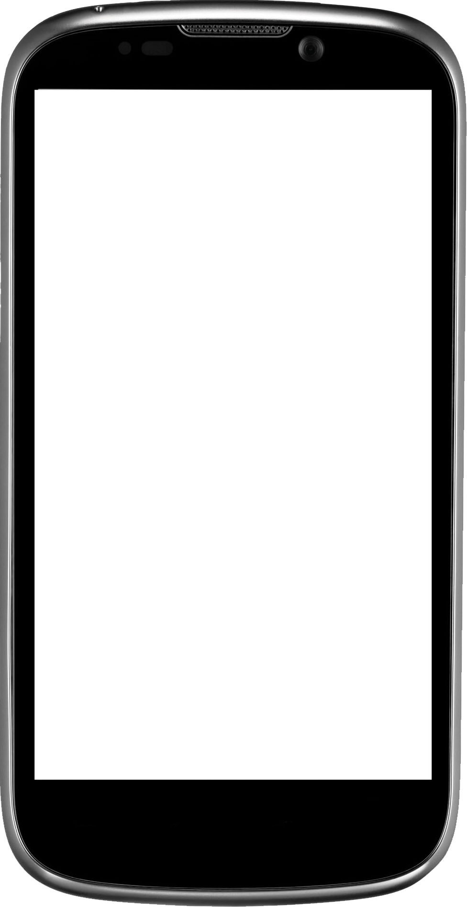

|
A web-based application that will allow vendors and customers to increase efficiency, save money, and enhance the shopping experience. The platform works as a built-in phone application that stores a customer's credit card information or online currency, that is purchased through a credit card transaction, and allows them to purchase items at supermarkets, grocery stores, dollar stores, vending machines, etc through a quick scanning of the item through the phone. |
 |